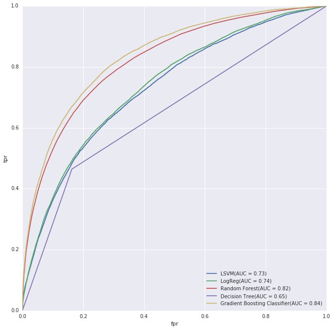
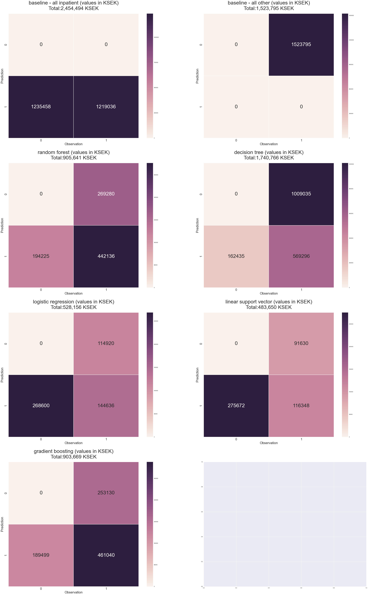

Can you trust doctor Robot?
It's late in the week and work is piling up. You run down the escalator to catch the northbound tube. Anchovised with your fellow commuters you catch your breath when you feel a sudden chest pain. At the same time you get nauesous and your vision just blurs until you pass out.
You wake up just as the ambulance enters Central ER, feeling a little dizzy you still have all your senses. At arrival you are welcomed by a shiny new doctor robot from Healthy Hearts Tech. A paramedic takes a brief look at you and adjusts a bar on the robots touchscreen brightly labeled ROC sensitivity before running to the next patient. As the robots commences it's examination of you the paramedic leaves and you get some final advice: "If it starts to stutter just press the big red button.
Project Introduction
Brief
When patient arrives into a hospital's ER, medical personnel has important decisions to make. Some patients should be discharged immediately, some could wait, and some should be attended by a doctor immediately and then be hospitalized. This paper investigates if Machine Learning methods can be used as tool helping the ER departments optimizing their logistics by giving an early indication if patient needs to be hospitalized.
About the ER
ER PRIORITIES
Here's a sample dashboard that is displayed on a large wall screen in the ER department. The dashboard
shows the status of ER from a patient logistics perspective.

Key performance measures are tracked in the above dashboard are:
- Waiting for triage
- Present at ER
- Present: Waited more than 8h
- Placement decided but waiting for hospital bed
ER TIMELINE
The following picture shows the typical timeline for inpatient and other patients:
Our Goals
We want to use machine learning methods to predict as early as possible whether a person coming into ER will require hospitalization. There's a trade off here. On one hand, we want to minimize a number of hospitalized patients, hospitalization is very expensive and saving money will let the hospital to provide care in more important areas. On the other hand, we don't want to send home a patient who will have a complication, or worse die because of this. Human life and health are priceless but with limited resources hard decisions need to be taken and predictive analysis can help with those decisions.
Method
Data Gathering
Our data set is the ER log. In the ER log patients are tracked from when they enter the ER until they exit the ER. The data in the ER log have been extracted from the hospital's main system for keeping electronic medical records and covers the majority of the ER wards in the reception area.
EDA - analyzing the data and it's features
The Er Log the project has access to has 100+ fields and one defensive initial idea are to focus on the triage data. The first examination plus the medical history of the patient are what nurses and doctor are using to assess the status of a patient and also to give a patient an initial priority. Many Swedish hospital is using Retts (http://predicare.se/en/om-retts/) decision support system for emergency medicine when assessing the patients and at the time of assessment a number of vital parameters are collected.
In that way the project piggy rides on the domain knowledge of the organisation and try to use features that they use. We will see if that is a good or bad idea, but we can always extend with more features later on. We only have access to the ER log and not the medical history of the patients and there already from the beginning we have some limitations that most probably will affect the precision of our predictions. In addition to that we do not get the “touch and feel” a nurse and doctor get’s when talking to a patient, they can use their hands to feel body temperature, sweating and pinpoint things like abdominal pains etc.
The vital parameters that we have access to are:
- Breathing frequency
- Saturation Status
- Body temperature
- Bllodpressure Systolic Upper
- Blood pressure Systolic Lower
- GCS Eye opening Status
- GCS Motoric Status
- GCS Verbal Status
- Stridor Status
- Pulse frequency regular
- Pulse frequency irregular
- Consciousness Retts scale status
- Saturation with oxygen status
In addition to that we will use patient Age. It seems that ER visits highly depend on the month, day of week, and hour of day, so we will add these features as well.
We aim to predict if a patient will need further care and become an Inpatient. We have two categories: Others and Inpatients. Others include people going home and outpatients. The main difference between an outpatient and an inpatient from a hospital logistics perspective is that the inpatients stays overnight and requires more resources. An outpatient may have an appointment at the hospital for example the following day or a week later for check up but their direct interaction (and use of resources) with the hospital is relatively brief.
On this chart we display a bar chart of number of inpatients vs others by year:

As we see, there're much more Others than Inpatients which gives us an unbalanced data set with about four Other patienets for every Inpatient.
On this chart we display histograms of different variables by inpatient/other status:

As we see, there's a difference in distribution in almost all variables. This gives us hope that we can predict whether the patient will be inpatient or outpatient.
As input variables we use aforementioned vital parameters, patient age, and date information. We separated data into training and tests set with 20% data in the test set and used test set only for final evaluation so that the data won't leak into the models. As a metric we use AUC on a ROC curve.
Analysis
As a baseline, we will use the model which sends all patients home. It's correct in about 80.1% of the cases. This model is very imprecise, and doesn't take into account the cost of lost lives and health, as well as cost of the treatment, but it's ok as a baseline. In order to
Feature Evaluation
If we order feature by importance using KBest using f_classif. We got the following top5 features:
- AgeID - 23258.7838511
- BloodpressureSystolicUpperID - 16178.6254018
- BloodpressureSystolicLowerID - 14223.2129934
- PulsefrequencyRegularID - 11020.7966351
- SaturationWithOxygenStatusID - 10664.3865356
- BreathingFrequencyID - 10321.2302924
If we order feature by weight which random forest assigns to them we got the following top 5 features:
- WayOfArrivalID (0.146988)
- ProblemCauseID (0.109143)
- VisitCauseID (0.106607)
- AgeID (0.103987)
- ArrivalHour (0.099533)
Random forest gives results, which take into account other features, so we would trust it more in this case.
ML Method Selection
We've chosen the following methods:
- Decision trees. They are know to work quite well for data with missing values which we have here
- Random forests. They are basically decision trees with lower variance
- Gradient boosting. They are another improvement on decision trees with lower variance
- Logistic Regression.
- Linear SVM (data set is very large and using kernelized SVM isn't good idea here)
ROC
Here's the ROC curve for models which we used:
As we see, the worst method are decision trees which is unsurprising. The method has high variance and very susceptible to overfitting. Logistic regression and Linear SVM are substantially better and quite close to each other. Random forest and Gradient Boosting Classifier are the best two, with Gradient Boosting Classifier performing a little bit better than random forest.
Overall the best method is Gradient Boosting Classifier. However, the method can be used with different threshold values, and we need to find a value which is the best in some sense. We will cover this in the next section.
Cost Matrix
This is were prediction models make contact with the real world. Putting things in numbers representing hard cash gets peoples attention. We started by collecting some cost data and then settled on case cost if a patient is admitted (In-patient) as our driving factor.
One In-patient case cost is in average 68 000 SEK which is about 8 000 USD. Armed with this we predicted an outcome of each model using our test data and compared this with the actual outcome in a confusion matrix. This confusion matrix served as input to our cost function were we applied the following costs:
Should be sent home
True negatives ( When Actual Other is Predicted as Other )
From both patient and hospital this is the best outcome. As a patient you were worried, came to the ER and 4h + a handful tax dollars (well actually about 400 USD) later you were sent home hopefully a little less anxious maybe with an ordination for some pain killers or a referral to an out-patient doctor.
Cost estimate: 0
Needs hospitalization but is sent home
False negative ( When Actual In-patient is predicted as Other )
For the patient this is the worst case. The ER failed to recognize that you need to be hospitalized to get well and after a night in pain you go back to the ER and finally they commit to to a hospital bed, the only thing is that now you feel worse, much worse than yesterday. The cost for this case were discussed to a length, we first set the cost to 0 arguing that from a pure bean counting hospital controllers perspective there is really no additional cost compared to a true positive other than maybe the extra ER visit, in the end we settled on a cost model where the cost for the false negative is a bit higher than for a true positive as most probably the patient will need extra care due to their late admission to good care and medicine.
Cost estimate: 85 000 SEK (10 000 USD)
Hospitalized but should have gone home
False positive: (When Actual Other is predicted as In-patient)
This is not good for either party but it is not as severe as a False negative. We made the assumption that the hospital will discover that the patient is quite alright and then discharge them early.
Cost estimate: 68000 * 25% = 17 000 SEK (2 000 USD )
In need of and gets a hospital bed
True positive: ( When Actual In-patient is predicted as In-patient )
This is actually good for the patient but still incurs a cost for the hospital. It's hard to to go into the macro economic effects so we kept to the micro scenario (Hospital economics) and just assigned the average cost for an In-patient case.
Cost estimate: 68 000 SEK (8 000 USD)
Cost Comparsion
As you can see, cost-wise the best model is linear support vector machine. However, the model was used with the default threshold, so these results are inconclusive. We need a separate step to find the optimal threshold which can be explored in the future.
Conclusion
In this project, we extracted the data from the database, cleaned it up, performed exploratory data analaysis, then choosen machine learning methods, applied, and compared them. We learned how to use git in collaborative setting with IPython notebooks, had experience of collaborating with the team over the internet in different time zones.
We used accuracy and AUC as criteria for comparing the models. According to all the criteria, the best model is gradient boosting, which is an ensemble variation of a decision tree model.
Cost matrix is the most realistic cost model among the ones we used, but we didn't have time to explore it completely. We used it to compare the models with the default threshold instead of finding the optimal threshold which could be improved with further work. According to default comparisons, LSVM is the best model, but we can change the threshold, and as a result the cost might change, so we can't trust these results
The results of our predictions show, how important and nuanced the work of doctors and other medical personnel is. Despite the fact, that we have a large amount of quantitative and qualitative information about the patient, we were able to find a model which is only 4% better in accuracy than the baseline. Doctors, not only take into account the vitals, and other information which we have, but the medical history, their intuition, which are quite hard to process and learn from for machine today.